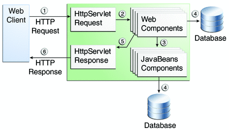

Document Information
Preface
Part I Introduction
1. Overview
2. Using the Tutorial Examples
Part II The Web Tier
3. Getting Started with Web Applications
4. JavaServer Faces Technology
5. Introduction to Facelets
6. Expression Language
7. Using JavaServer Faces Technology in Web Pages
8. Using Converters, Listeners, and Validators
9. Developing With JavaServer Faces Technology
10. Java Servlet Technology
Part III Web Services
11. Introduction to Web Services
12. Building Web Services with JAX-WS
13. Building RESTful Web Services with JAX-RS and Jersey
Part IV Enterprise Beans
14. Enterprise Beans
15. Getting Started with Enterprise Beans
16. Running the Enterprise Bean Examples
17. A Message-Driven Bean Example
Part V Contexts and Dependency Injection for the Java EE Platform
18. Introduction to Contexts and Dependency Injection for the Java EE Platform
19. Running the Basic Contexts and Dependency Injection Examples
Part VI Persistence
20. Introduction to the Java Persistence API
21. Running the Persistence Examples
22. The Java Persistence Query Language
23. Using the Criteria API to Create Queries
Part VII Security
24. Introduction to Security in the Java EE Platform
25. Getting Started Securing Web Applications
Securing Web Applications
Specifying Security Constraints
Specifying a Web Resource Collection
Specifying an Authorization Constraint
Specifying a Secure Connection
Specifying Separate Security Constraints for Various Resources
Specifying Authentication Mechanisms
HTTP Basic Authentication
Form-Based Authentication
Digest Authentication
HTTPS Client Authentication
Mutual Authentication
Specifying an Authentication Mechanism
Using Deployment Descriptors to Secure Web Applications
Declaring Security Roles
Mapping Security Roles to GlassFish Server Groups
Using Programmatic Security with Web Applications
Authenticating Users Programmatically
Checking Caller Identity Programmatically
Example Code for Programmatic Security
Declaring and Linking Role References
Examples: Securing Web Applications
To Set Up Your System for Running the Security Examples
Example: Basic Authentication with a Servlet
Specifying Security for Basic Authentication Using Annotations
To Build, Package, and Deploy the Servlet Basic Authentication Example Using NetBeans IDE
To Build, Package, and Deploy the Servlet Basic Authentication Example Using Ant
To Run the Basic Authentication Servlet
Example: Form-Based Authentication with a JavaServer Faces Application
Creating the Login Form and the Error Page
Specifying Security for the Form-Based Authentication Example
To Build, Package, and Deploy the Form-Based Authentication Example Using NetBeans IDE
To Build, Package, and Deploy the Form-Based Authentication Example Using Ant
To Run the Form-Based Authentication Example
26. Getting Started Securing Enterprise Applications
Part VIII Java EE Supporting Technologies
27. Introduction to Java EE Supporting Technologies
28. Transactions
29. Resource Connections
30. Java Message Service Concepts
31. Java Message Service Examples
Index
|
|
Overview of Web Application Security
In the Java EE platform, web components provide the dynamic extension capabilities for a web
server. Web components can be Java servlets or JavaServer Faces pages. The interaction
between a web client and a web application is illustrated in Figure 25-1.
Figure 25-1 Java Web Application Request Handling Web components are supported by the services of a runtime platform called a
web container. A web container provides such services as request dispatching, security, concurrency, and
life-cycle management. Certain aspects of web application security can be configured when the
application is installed, or deployed, to the web container. Annotations and/or deployment
descriptors are used to relay information to the deployer about security and other
aspects of the application. Specifying this information in annotations or in the deployment descriptor
helps the deployer set up the appropriate security policy for the web application.
Any values explicitly specified in the deployment descriptor override any values specified in
annotations.
Security for Java EE web applications can be implemented in the following ways.
Declarative security: Can be implemented using either metadata annotations or an application's deployment descriptor. See Overview of Java EE Security for more information.
Declarative security for web applications is described in Using Deployment Descriptors to Secure Web Applications.
Programmatic security: Is embedded in an application and can be used to make security decisions when declarative security alone is not sufficient to express the security model of an application. Declarative security alone may not be sufficient when conditional login in a particular work flow, instead of for all cases, is required in the middle of an application. See Overview of Java EE Security for more information.
Servlet 3.0 provides the authenticate, login, and logout methods of the HttpServletRequest interface. With the addition of the authenticate, login, and logout methods to the Servlet specification, an application deployment descriptor is no longer required for web applications but may still be used to further specify security requirements beyond the basic default values.
Programmatic security is discussed in Using Programmatic Security with Web Applications
Message Security: Works with web services and incorporates security features, such as digital signatures and encryption, into the header of a SOAP message, working in the application layer, ensuring end-to-end security. Message security is not a component of Java EE 6 and is mentioned here for informational purposes only.
Some of the material in this chapter builds on material presented earlier in
this tutorial. In particular, this chapter assumes that you are familiar with the
information in the following chapters:
Copyright © 2010, Oracle and/or its affiliates. All rights reserved. Legal Notices
|